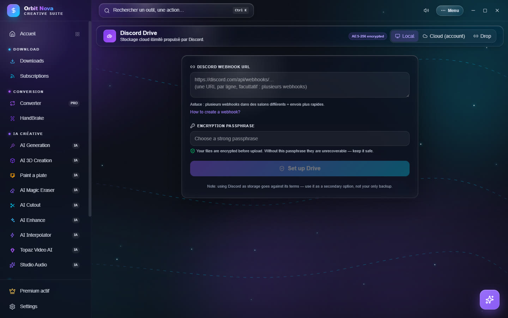

Discord Drive
The Discord Drive stores your files online by cutting them into encrypted pieces (AES-256) sent to Discord. Your files are encrypted on your PC before they leave: neither Discord nor the Orbit server can read them.
Discord is not made to store files and its terms of service do not plan for it: a channel or an account can be deleted. Always keep another copy of your important files.
The tab has three modes, at the top right: Local, Cloud (account) and Drop.


Local mode
Everything stays on your PC (the file list and the key); the pieces go to your own Discord channel.
- On Discord, pick or create a private channel.
- Channel settings › Integrations › Webhooks › New webhook, then Copy webhook URL.
- In Orbit, paste it in Discord webhook URL. Several webhooks (one per line, in different channels) make uploads faster.
- Pick a strong Encryption passphrase, then Set up Drive.
Without the passphrase, nobody can read the files back, not even you. Write it down somewhere safe: it cannot be recovered.
Each time you open it, type the passphrase to Unlock the Drive. Lock closes it.
Cloud mode (account)
Cloud mode uses an Orbit account: your files follow you on all your PCs.
- Create account (e-mail and password) or Sign in.
- Pick an encryption passphrase; it protects your files and works on all your devices.
Then: Upload files, New folder, Refresh, filter, download, delete. Videos play straight from the Drive. Forgot password? sends a code by e-mail; it changes the sign-in password, not the passphrase.
The Telegram button stores files on your Telegram account (in your Saved Messages) instead of Discord. The Telegram session stays on your PC.
Drop: share without an account
Drop sends a file to someone, even without an account: Orbit encrypts it with a one-time key and gives you a share code. The other person pastes this code in Drop to download and decrypt the file. Drops expire automatically after a while.
Shared folders (codes starting with orbf1_) open in the same place; you can download them, play them or
Save to my Drive.
Share from the Drive
In Cloud mode, Share on a file or a folder creates a code: the content is re-encrypted with a new key, your account key is never sent. Give the share a title: it is visible to anyone who has the code.